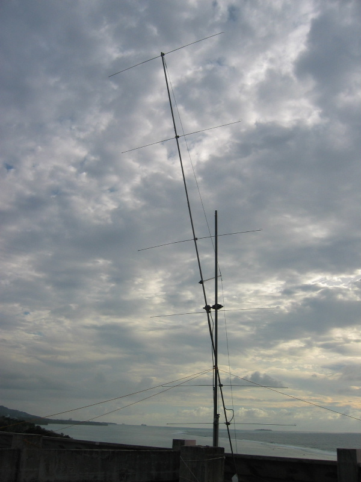
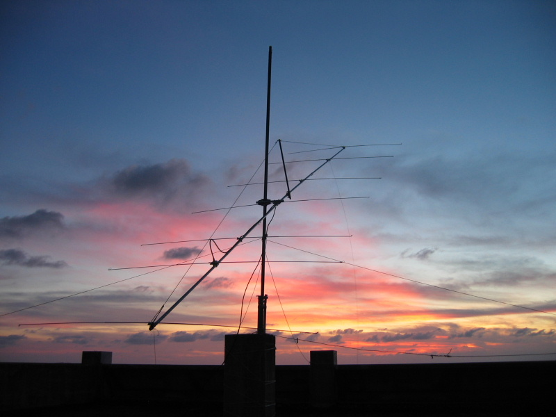
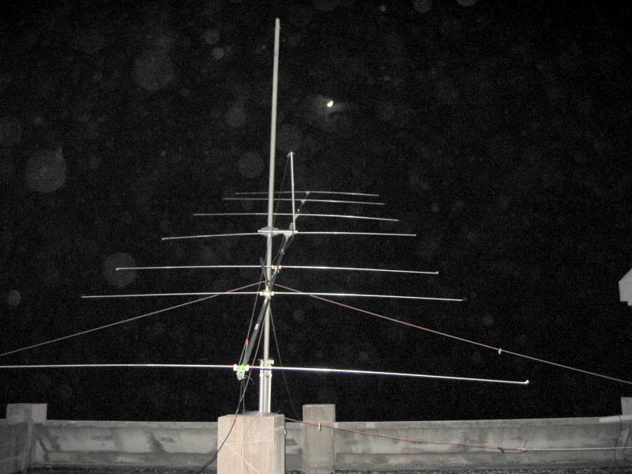
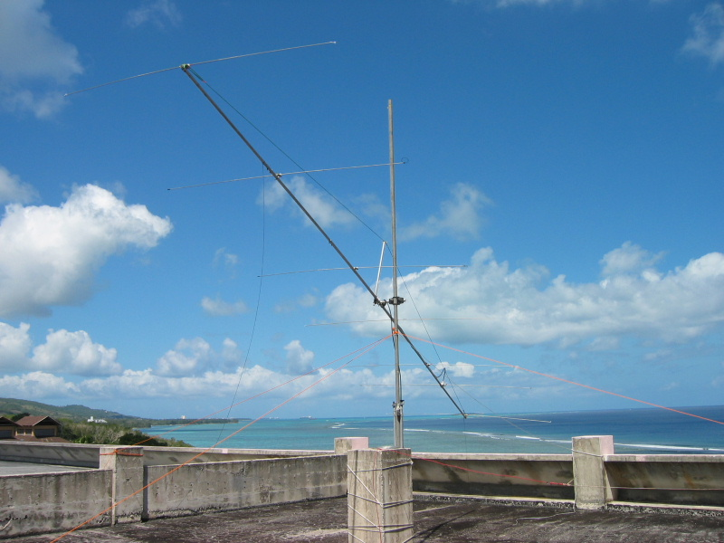
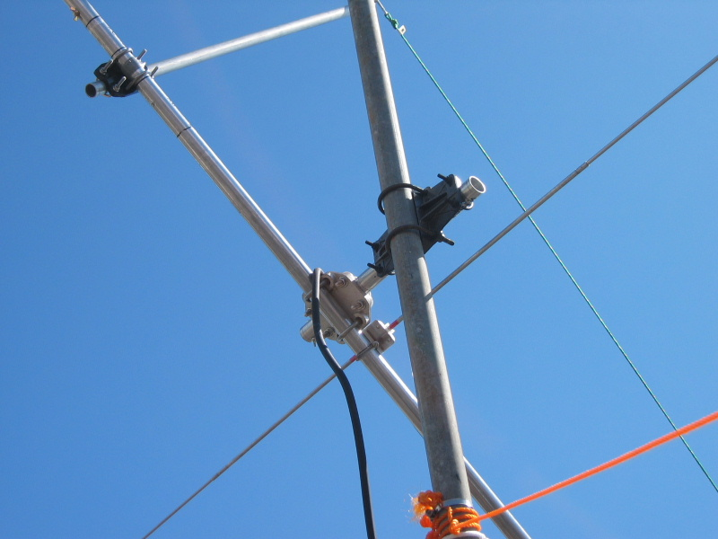
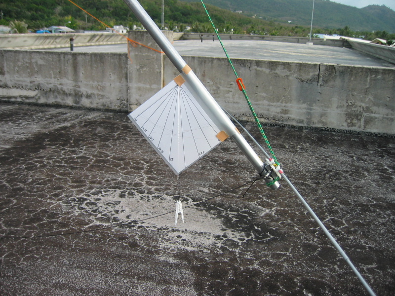

|
◎ EME QSO DATA
ON4IQ & ON4GG. W7GJ. IW5DHN. SM7BAE. ES6RQ. G4FUF. ZS6NK. K7BV/1. OH7PI. K6MYC. W3UR. KE7V. NL7L. M0BCG. JH2COZ. JG2BRI.  Max elevation was over 88deg (Tryed for OH7PI)

|

|
◎KH0/KH2K 50MHz EME QSOの結果 通常、1分送信、1分受信を繰り返して行うEME通信では、双方の周波数、 送信順などを事前に決めて行う"スケジュールQSO"が一般的になっている。 今回はあえてこのスケジュールを組む方式は取らず、 現地からインターネットのEMEの"Chatページ"を通じて当日になってスケジュールを組む方法を取った。 運用に際して事前に公表していたのはコールサイン(KH0/KH2K)と送信周波数(50.195MHz)、送信順だけだった。 結果的には4日間で10局とのQSOに成功したが、予想以上の成果を上げられた要因はアンテナの仰角が可変出来たことだった。 アンテナの仰角可変の範囲がほぼ"FULL"の状態に近かったため、QSOを希望していた局に全て対応する事が出来た。 今回のQSO局の中には"Chatページ"にアクセスせずに他局のQSO後に直接呼んできたES6RQや、 G4FUFのように"CQ"に直接応答してきてQSOした局もいた。 KH0/KH2Kは欧米の局が使用している50.195MHzを運用周波数としたため、 50.000-50.100MHzのみでEMEが許可されているJA局はこの周波数ではトライ出来なかった。 最終日にJA向けに50.198(送信)/50.035MHz(受信)のスプリットでトライしたが、 残念ながらこの日はノイズが多く結局QSOは出来なかった。
[運用結果]
THE TOTALS 10 QSO LIST FROM KH0/KH2K (5/14-17.2005)
( ) THE INSIDE IS IMPERFECT QSO STATIONS.
5/14 5/15 5/16 5/17
ON4IQ W7GJ G4FUF K7BV/1
ON4GG IW5DHN ZS6NK OH7PI
(IW5DHN) SM7BAE (K7BV/1.K6MYC.W3UR) (W3UR.KE7V.NL7Z.JH2COZ.JG2BRI)
ES6RQ
(K6MYC.M0BCG)
DE KAZU/JA1RJU & KH0/KH2K
|



